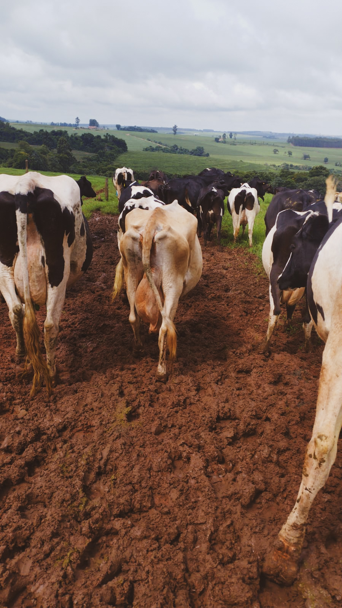

A feira livre é um evento que ocorre nas quartas-feiras e reúne diversos agricultores, que vendem e ofertam seus produtos.
Não se sabe ao certo como surgiu a feira em si, mas há relatos que surgiu por volta dos anos 2000, quando as barraquinhas ainda ficavam nas ruas.
Foto de sítio entre Peabiru e Araruna
Aqui você encontrará uma coleção de artigos, posts de blog, infográficos e outros recursos relacionados ao tema.
Depoimentos e histórias de sucesso de pessoas que fizeram a transição do campo para a cidade.
08 AGO. Expo Goio. Início: 08/08/2024 (quinta-feira) - 08:00.
18 SET. Expovel - Internacional. Início: 18/09/2024 (quarta-feira) - 08:00.
24 SET. International Fish Congress & Fish Expo Brasil - IFC 2024. Início: 24/09/2024 (terça-feira) - 09:00.
24 OUT. Expo Irati
21 NOV. Rural Tech Santa Helena.
Entre em contato conosco para enviar perguntas, sugestões ou colaborações.
Instagram: @colegioest.14de
Telefone: (XX) XXXX-XXXX